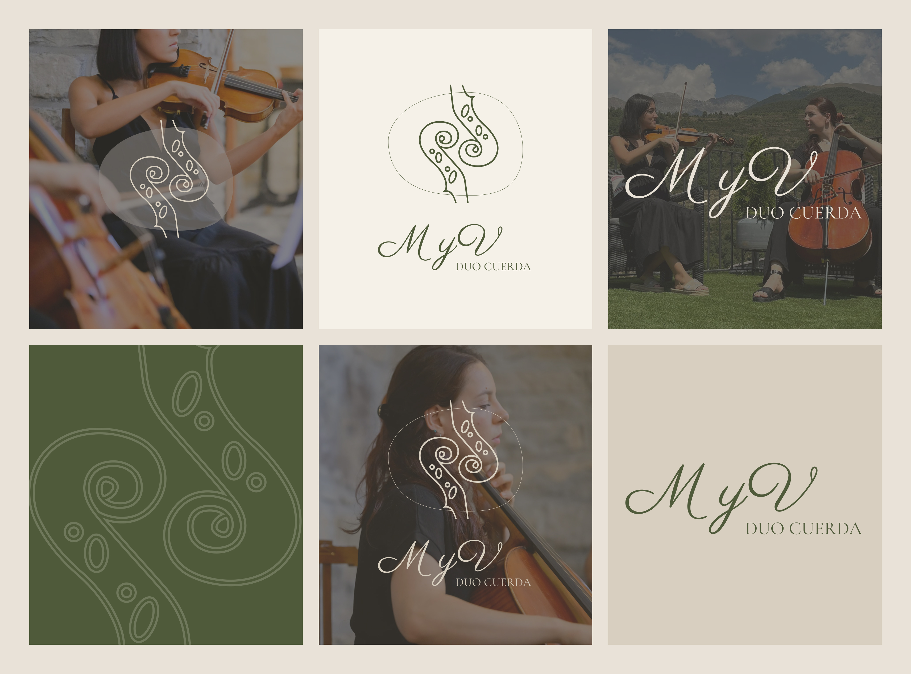
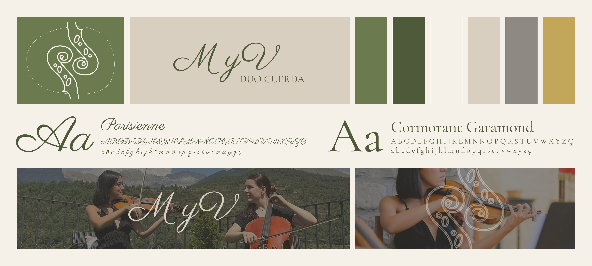
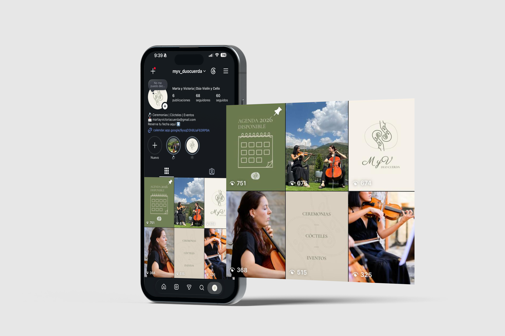

Branding · Identidad visual
Marta & Victoria
Identidad visual para un dúo de cuerda que quería darse a conocer: logotipo, sistema visual y presencia en Instagram diseñados desde cero para dos amigas que tocan violín y cello.

Objetivo del proyecto
- ○Crear una identidad que transmitiera elegancia sin resultar lejana ni excesivamente formal.
- ○Construir una marca reconocible para posicionarse en el mercado de eventos.
- ○Definir un sistema visual coherente y aplicable a todos los soportes digitales.
- ○Lanzar una presencia en Instagram alineada con la identidad desde el primer post.
El punto de partida
Marta y Victoria llevan años tocando juntas: violín y cello, dos instrumentos que se complementan de forma natural. El reto era transformar esa conexión musical en una marca que les abriera puertas en el mundo de los eventos: bodas, celebraciones, actos corporativos.
Partíamos de cero: sin nombre establecido, sin imagen y sin presencia digital. El proyecto abarcó desde la definición del concepto de marca hasta el lanzamiento de su perfil de Instagram.
Una identidad que sonara tan bien como su música: elegante, cercana y con personalidad propia.
Logotipo e identidad
El logotipo parte del concepto de dualidad: dos instrumentos, dos personalidades, una sola voz. La composición tipográfica combina una letra con carácter clásico con una estructura limpia y contemporánea, buscando ese equilibrio entre tradición musical y modernidad.
La paleta recoge tonos cálidos y refinados que evocan la madera de los instrumentos de cuerda, sin caer en los clichés del sector clásico. El resultado es una identidad que se siente cercana y auténtica.
- Logotipo principal y versiones secundarias.
- Paleta de color basada en tonos cálidos y neutros.
- Sistema tipográfico con jerarquía clara.
- Guía de uso para aplicaciones digitales.

Sistema visual
Una marca coherente en cada soporte.
Más allá del logo, el sistema visual define cómo se comporta la marca en cualquier contexto: qué tipografías usar, cómo combinar los colores, qué tono tienen las imágenes y cómo se estructuran las composiciones.
Colorimetría. Tonos cálidos que evocan calidez y distinción sin resultar recargados.
Tipografía. Combinación de fuente con personalidad clásica y sans-serif limpia para textos de apoyo.
Estilo visual. Fotografías en tono cálido, composiciones con aire y espacio para respirar.
Tono de voz. Cercano y elegante: música de verdad para momentos que importan.


Presencia en Instagram
Con la identidad definida, el siguiente paso fue construir su presencia digital desde el primer post. Diseñé la estrategia de contenido y las plantillas visuales para que el feed funcionara como un conjunto cohesionado: cada publicación refuerza la marca y comunica quiénes son.
El objetivo no era solo que el perfil quedara bonito, sino que cualquier persona que lo visitara entendiera en segundos qué ofrece el dúo, qué tipo de eventos cubre y por qué contratarlas.
- Plantillas de posts reutilizables y coherentes.
- Bio, highlights y estrategia de contenido inicial.
- Estilo fotográfico y de edición definido.
- Primeras publicaciones diseñadas y listas para publicar.
Siguiente proyecto